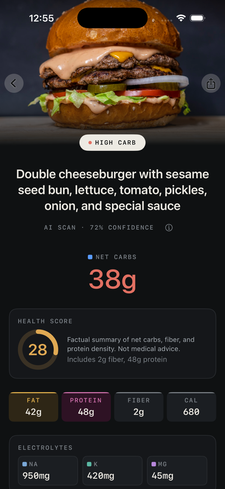

01 · Scan
Photograph the plate.
Photograph the plate.
Get the numbers.
AI estimates net carbs, macros, fiber, and electrolytes from one photo. Add a voice note ("brioche bun, no fries") for tighter estimates.
